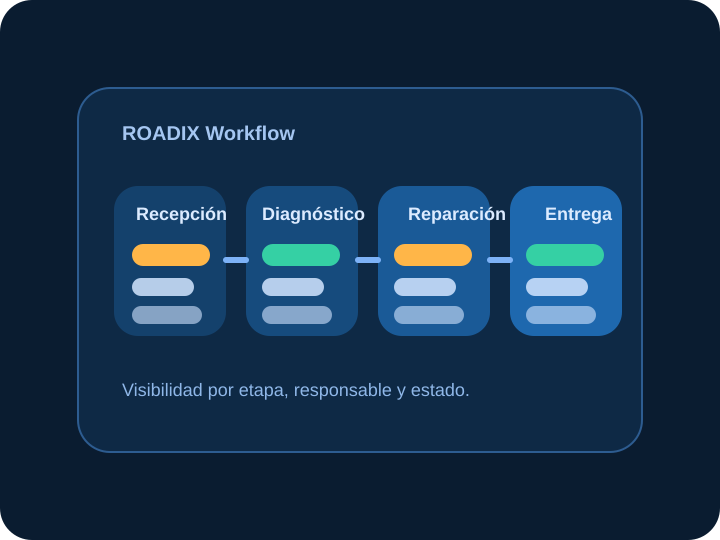
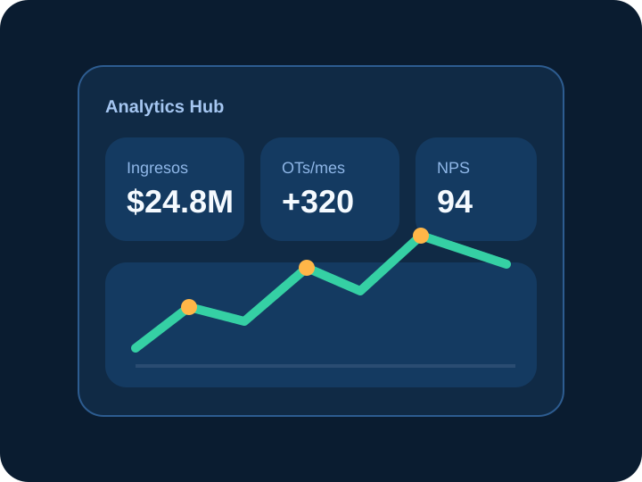

Órdenes de trabajo y Kanban
Control del ciclo operativo por estado: recepción, diagnóstico, presupuesto, aprobación, reparación, control de calidad, entrega y facturación.
Cobertura funcional
Aquà se muestra la amplitud real del producto: desde la gestión operativa diaria hasta la capa comercial y de inteligencia de negocio.
Control del ciclo operativo por estado: recepción, diagnóstico, presupuesto, aprobación, reparación, control de calidad, entrega y facturación.
CRM del taller, fichas por cliente, historial por vehÃculo, patente, kilometraje, combustible y seguimiento completo de cada unidad.
Gestión de repuestos, movimientos de stock, mÃnimos crÃticos, compras y relación con proveedores para una bodega controlada.
Registro de cobros, métodos de pago, caja diaria, facturación y soporte para procesos de facturación electrónica en contexto chileno.
Portal con acceso por link, correos automáticos, recordatorios y visibilidad del avance para elevar la percepción de servicio.
Dashboard con KPIs, ingresos, eficiencia de mecánicos, OTs por estado, top servicios y clientes relevantes para la toma de decisiones.
Visuales integrados
En lugar de abrir una página aparte, aquà se muestra el material visual que ayuda a presentar la experiencia del producto con más fuerza.

Representación visual del flujo de trabajo desde la recepción hasta la entrega del vehÃculo.
Imagen orientada a la experiencia del usuario final, seguimiento y comunicación profesional.

Visual asociado a KPIs, ingresos, productividad y escalabilidad del negocio.
Los módulos no funcionan aislados: se conectan entre recepción, diagnóstico, repuestos, cobro y postventa.
El lenguaje visual ayuda a explicar el sistema en demos comerciales sin perder foco en la operación real.
La amplitud funcional permite vender ROADIX como plataforma de gestión integral y no como herramienta puntual.